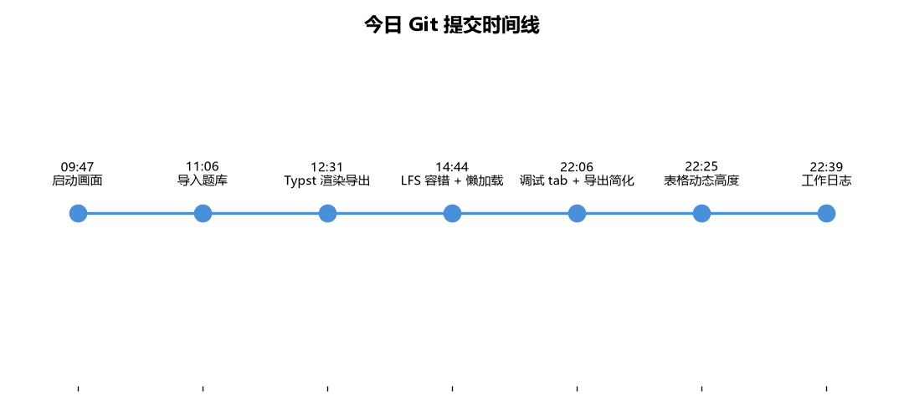
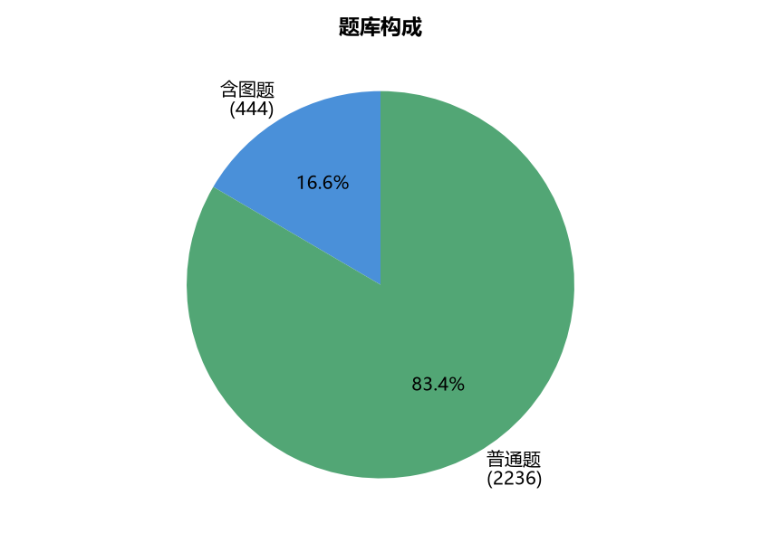
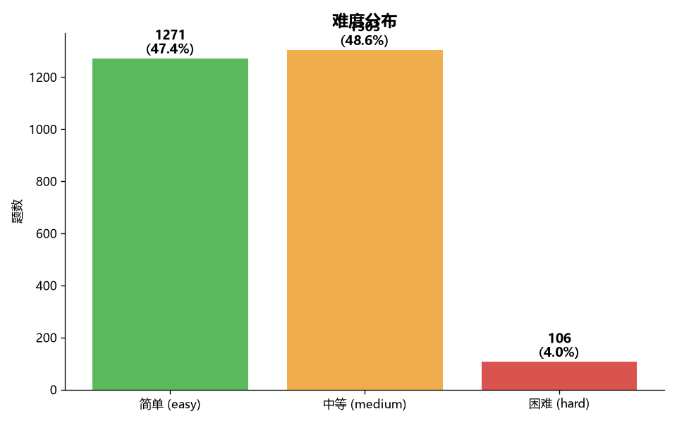
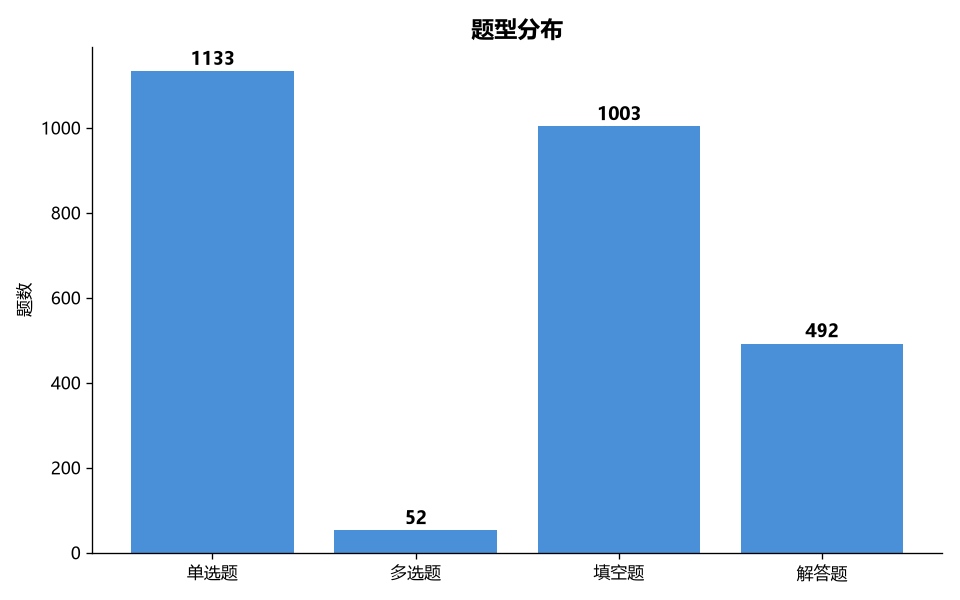
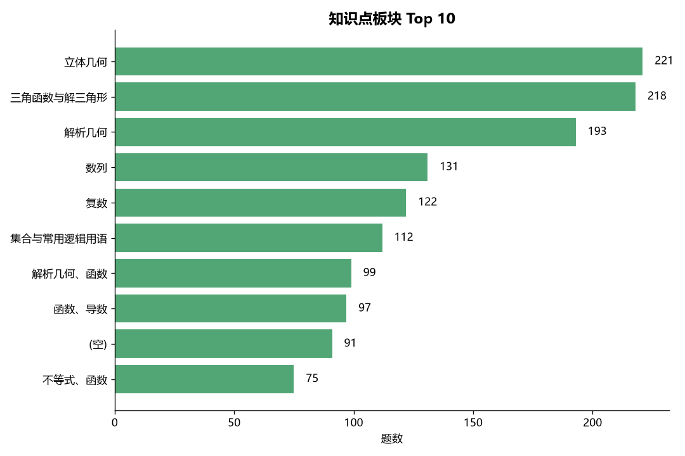

| 时间 | 类型 | 内容 |
|---|---|---|
| 09:47 | feat | 启动画面（Windows 风格旋转动画 + 后台线程加载） |
| 09:50 | chore | 移除误创建的空文件 |
| 11:06 | feat | 导入 2236 道高考题库 + 修复跨线程 SQLite 连接 |
| 12:31 | feat | 含图题导出渲染 Typst 图 + 相邻图合并 + 题号对齐 + 题型中文 |
| 14:44 | feat | 含图题导出完善 + 本地模型懒加载 + 图片路径修正 + LFS 容错 |
| 14:44 | chore | 忽略无意义的 typst_assets（LFS 指针） |
| 14:46 | chore | .gitignore 忽略工具缓存/测试诊断目录 |
| 22:06 | feat | 调试 tab 加 5 个开关 + 导出区简化 + AI 状态提示优化 |
| 22:25 | feat | 组卷页表格动态高度（空 3 行，有内容按行数展开） |
| 22:39 | docs | 添加工作日志与待完成工作清单 |




| 模型 | 指标 | 说明 |
|---|---|---|
| 知识点分类（16 类） | k_macro = 0.84 | RoBERTa 微调 |
| 难度分类（3 类） | d_f1 = 0.73 | RoBERTa 微调 |
| 优先级 | 任务 | 投入 |
|---|---|---|
| P0 | 难度模型精度优化（困难类偏少） | 1~2h |
| P0 | 导入知识点模型（复制难度模型套路） | 2~3h |
| P0 | 统一 AI 入口（按钮整合） | 半天 |
| P1 | 知识点三级映射表 | 1h |
| P1 | 找回 2 道被删的题（Git LFS 图） | 1h |
| P2 | 打包成 exe | 半天~1天 |